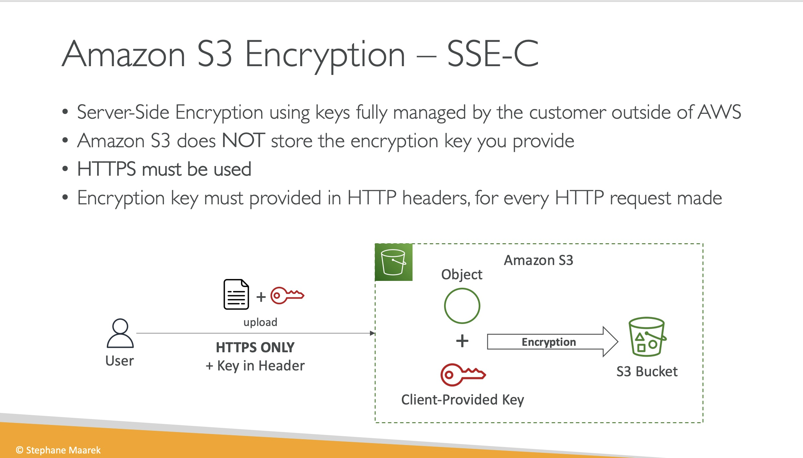
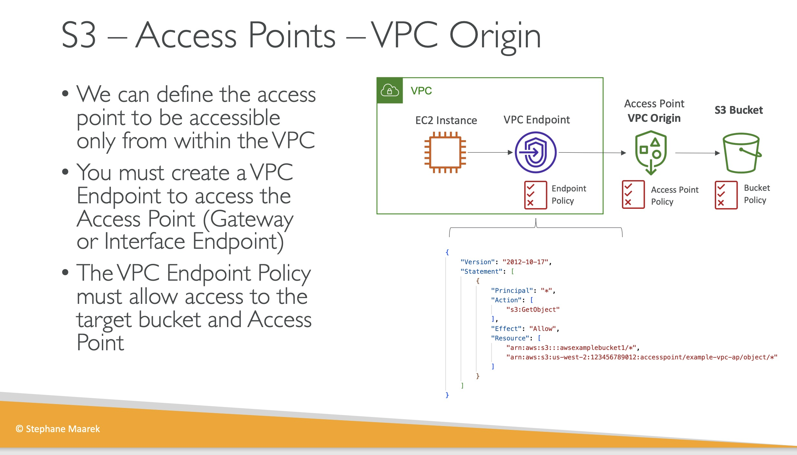
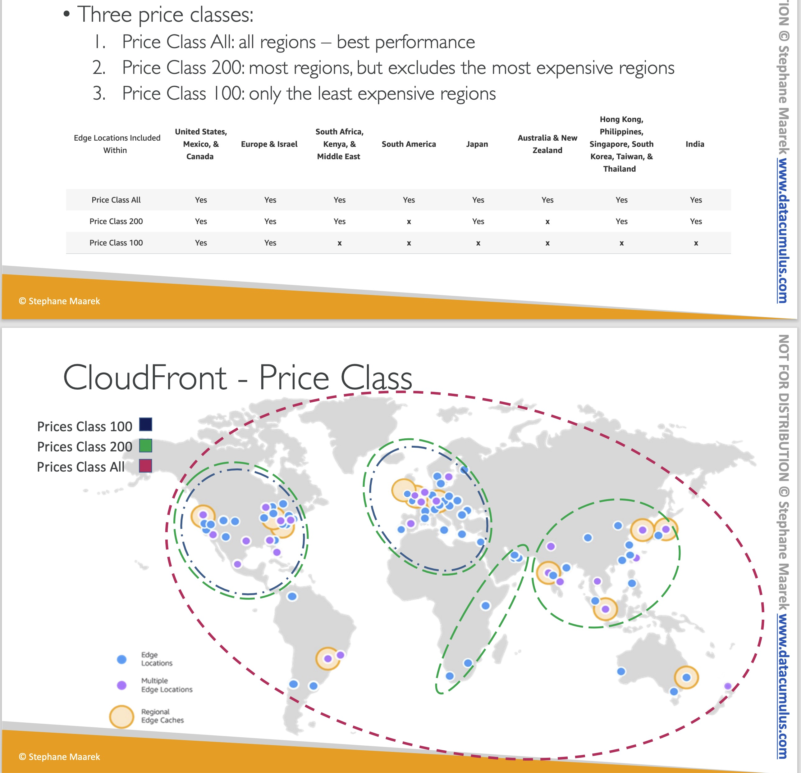
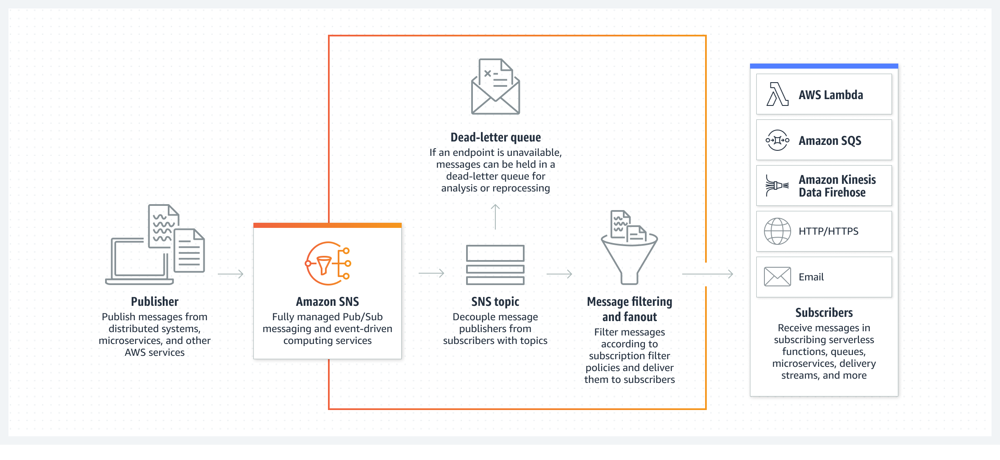

Udemy AWS SAA-C03 課程筆記
Contents
Intro
這篇筆記會記錄 Udemy Ultimate AWS Certified Solutions Architect Associate SAA-C03 隨堂筆記。
!! 目前施工中~~~ !!
AWS Free Tier 說明

▲ Control Your AWS Costs，設定警告避免帳單爆炸。
Section 4 IAM and AWS CLI
IAM
- Groups 只能包含 users， 不能包含另一個 group
- Policy 除了可以加在 groups 以外， inline policy 可以直接對 user 賦予權限

▲ IAM inline policy
- IAM Role 與 IAM Policy 的差別:
IAM Roles vs. Policies. IAM Roles manage who has access to your AWS resources, whereas IAM policies control their permissions. A Role with no Policy attached to it won’t have to access any AWS resources.
CLI
Installing or updating the latest version of the AWS CLI
AWS bash complete - Command completion
|
|
設定 AWS cli - Configuration and credential file settings
|
|
config file 會在 ~/.aws/credentials
|
|
2023.04.18 更新：如果使用 zsh + 有切換 aws profile 需求的話可以開啟 zsh aws plugin 功能。Management AWS Profiles | Hwchiu Learning Note
Section 5 EC2 Fundamentals
- EC2 stop and start 會改變 Public IP 但是 Private IP 不會改變。
- EC2 security group 是有 region/VPC 區分的 (不可跨)。
- EC2 Spot Request 分成 (1) one-time (2) persistent， 但不論 spot request 是否存在 instance 都必須手動被關閉 (假設是 running 狀態，且沒有被競價而關閉)
秉持最小權限原則，我將 EC2 設定 Inbound TCP/80 TCP/22 只允許被家裡固定 IP 訪問，但會造成 Web shell 沒辦法連線，解法請參考下方。
EC2 允許 Web Shell (Instance Connect) 連線，security group 設定方式
- Set up EC2 Instance Connect#Task 1: Configure network access to an instance-(Amazon EC2 console)
- AWS IP address ranges
▲ 以 Singapore (ap-southeast-1) 來說就是這段。
▲ EC2 命名規則。
▲ EC2 Price type.

▲ spot request lifecycle. ref 假設 sport request 是 persistent，想要關閉由 sport request 建立的 instance 的話，必須要先關閉 spot request
Section 6 EC2 Solutions Architect Associate Level
- Elastic IP 如果申請後不使用會被收錢。
Placement Group 放置群組
這有點像 VMware 的 DRS (Distributed Resource Schedler)
- Cluster placement groups
- EC2 會被放在 the same AZ and the same rack ，讓 instance 擁有高速/低延遲網路
- Partition placement groups
- 假設有 partition 1~3，每個 partition 都可以有多個 instance
- 每個 partition 內的 instance 會被限制在同一個 AZ 中特定一組機櫃。(Amazon EC2 ensures that each partition within a placement group has its own set of racks )
- 不同 partition 內的 instance 不會共用機櫃。 The instances in a partition do not share racks with the instances in the other partitions
- 每個 partition 可以在不同 AZ，一個 AZ 至多有 7 個 partition (但要是在同一個 region)
- Spread placement groups
- 群組內至多只能有 7 個 instance
- 群組內的 instance 都會被放置在不同機櫃。 The seven instances are placed on seven different racks

▲ 圖片來源: Using partition placement groups for large distributed and replicated workloads in Amazon EC2
Elastic network interfaces (ENI)
An ENI is a logical networking component in a VPC that represents a virtual network card
Section 7 EC2 Instance Storage
EBS
- A network drive
- Locked to AZ. (Snapshot 後可搬遷)
- Each EBS attach ONLY 1 EC2 instance ( 1:1，但是 io1 / io2 除外! )
EBS volume types
- gp2 效能與硬碟大小有正相關性
- gp2 要開到 5334 GB才能獲得最高 IOPS 16,000。(3 IOPS per GB)
- gp3 最低效能有 3000 IOPS + 125MiB/s，可以自行調整
以上都是 SSD 可開範圍從 1 GiB ~ 16 TiB

▲ 上圖是 EC2 t2.micro with 30GB gp2 EBS 的笑能。測試使用 Yet-Another-Bench-Script
- Provisioned IOPS SSD volumes: io1 / io2 / io2 Block Express volumes
- 極致效能
▲ Provisioned IOPS SSD volumes
- Hard disk drive (HDD) volumes: st1 / sc1 (cold HDD)
EBS Snapshot
- EBS snapshot -> EBS archive，可以節省 75% 的花費，但可能會花費 72 小時 restore (講師是說 24-72 啦)
- Fast Snapshot Restore (FSR) 能夠快速復原到 EBS，但是要花錢。
EBS encryption
- 想對 未加密 EBS 加密的話，步驟如下: snapshot -> copy snapshot with encrypted -> create EBS from encrypted snapshot
EC2 instance store
- 有鑑於 EBS 是 network drive， EC2 instance store 是使用 server 身上的硬碟
- 有較好的 I/O performance
- 缺點: 要錢
這是使用者的缺點 - 缺點: EC2 instance stop 之後 instance store 就會消失! 所以又被稱為 ephemeral store
- 缺點: server hardware failed 在上面的資料也跟著 failed (不知道有沒有做 RAID)
AMI Amazon Machine Images
- 能夠客製化 OS image (預裝所需套件、監控)
- region level，可以被複製到其他區域
- AMI Marketplace 歡迎參觀選購
- 製作方式跟 VMware Template 很像， VM 開機 -> 裝飾 -> 關機 (EC2 利用 snapshot，無須關機) -> 製作範本
EFS, Amazon Elastic File System
- NFS drive，只支援 Linux base AMI
- Region base == cross AZ
- 價格是 3x gp2
- 效能可設定
- 能設定 policy 自動把不常存取的 file 丟進 EFS-IA (Amazon EFS Infrequent Access) 減少花費
- Support multi attache
Section 8 High Availability and Scalability:ELB & ASG
ELB - ALB
- AWS managed LB
- 不可 綁定 Elastic IP (AWS 固定 IP)，歡迎使用 Route53 alias record 託管域名。
- ALB 的 security group 要建立兩個:
- (1) HTTP-allow-all 允許 TCP 80 port in/out bound，綁在 ELB 身上
- (2) allow-my-ELB-visit 允許 TCP 80 port Inbound，綁在 EC2 身上， source 是 HTTP-allow-all 這個 SG
- target group 內的 targets 若有 health check failed 建議一律 Deregister -> regist (重新註冊)

▲ ELB 歷史種類。
ELB - NLB
Network Load Balancer overview
- OSI layer 4 level LB
- 可 綁定 Elastic IP (AWS 固定 IP)
ELB - GWLB

▲ Gatwway load blancer 屬於 Layer 3 層級的 LB，講師以流量清洗 (firewall) 作為例子。流量會透過 GWLB 打在 target group 清洗完之後才會打到 App
Cross Zone LB
- ALB 預設會跨 AZ，從 ELB, target group 可以關閉 (兩個地方)
- ALB 跨 AZ 流量不收費。NLB, GWLB 要收!
- NLB and GWLB 的 cross zone 預設是關閉的

▲ ELB cross zone V.S without cross zone
Section 9 RDS + Aurora + ElastiCache
RDS, Amazon Relational Database Service
- AWS 代管 DB 服務， 使用者沒有 EC2 SSH 訪問權限。
- 可跨 AZ， (可選) AWS 會自動幫你在不同 AZ 產一個 standby instance + maintain
- 硬碟空間可視為無限大，使用者可以設定最高容量避免 auto scaling 導致費用爆炸
- DB Engine 支援: MariaDB, MySQL, PostgreSQL, MSSQL, Oracle
- MSSQL, Oracle，兩個不推薦的 DB 使用 RDS custom，使用者能夠碰到 OS 底層並且 SSH
- 在相同 region 的 read replicaset instances 異步 (Asynchronous) 流量不計費。
- Read replica 使用異步同步 (Asynchronous)， multi-AZ 使用同步同步 (synchronous)。
- 自動備份 (Auto backup) 功能能做到:
- (1) Daily full backup of the database (during the backup window)
- (2) 每 5 分鐘備份 transaction log
- (3) 備份檔案保留 1~35 天 (如果設定
0即關閉自動備份) - 可以從 AWS S3 拉檔案 restore
Tips: 如果測試環境要省錢的話，可以 snapshot RDS instance，要使用時再從這個快照 restore。這樣只要付 snapshot storage 的錢
▲ RDS 多讀架構。延伸閱讀: MariaDB Replication
2023.02.21 更新 現在 RDS with MySQL, MariaDB and PostgreSQL 每個 instance 都可以擁有 15 個 read replicas (包含 5 個 cross region read replicas)
ref: Amazon RDS for MySQL, MariaDB and PostgreSQL now support up to 15 read replicas for 3X read capacity

▲ DNS domain name 能夠達成 automatic failed over
▲ RDS proxy， reverse proxy for DB，而且是 serverless & auto scaling
Aurora
- AWS 代管更強大的 DB 服務， DB Engine 提供 MySQL 與 PostgreSQL
- Master node (Write) 能夠建立 cross region
- 有 Multi-Master 提供 multi write 的功能。(延伸閱讀: MariaDB Galera Cluster 建置 )
- 可以接 AWS 的 AI 功能 (SageMaker, Comprehend)
- 自動備份 (Auto backup) 功能無法關閉! 檔案可選擇保留 1~35 天
- 支援 serverless ， Using Aurora Serverless v2, Amazon Aurora Serverless
▲ Aurora 讀寫分離 (提供兩組 DNS domain name)
▲ Aurora 可以創造 custom endpoint
Aurora Cloning
- 使用 CoW (Copy-on-Write) 節省使用空間 ($$)
- 適合用於測試環境

▲ CoW 機制。ref: Database Cloning in Amazon Aurora
Elastic Cache
▲ redis V.S memcached
Section 10 Route 53
- AWS managed 的 HA DNS hosting 服務，AWS 承諾 100% SLA
- sub-domain 才能有 CNAME record
- 跟自架 DNS server 一樣，有 Public zone 與 Private Zone
- alias record 只能指向 AWS resources，但可以導向 root domain name 例如:
mydomain.tw => xxx.elb.amazonaws.com - (承上) 免費、自帶 health check，但因為是 DNS 廠商擴充功能，非 RFC 規格，因此沒辦法設定 TTL (個人結論)
- routing policy 可以針對 IP-based, Latency-based, Weighted 等去做 DNS reply
- Route 53 routing policy - Geoproximity (有圖) 可以讓流量就近被服務 (例如: 日本 client 就去找我在日本部屬的 AWS ELB)，使用者可以設定距離
- (承上) 需開啟 Route 53 traffic flow 功能方能使用
▲ Alias target (value) 可以是這些， 但不可以是 EC2 instance DNS name
Section 11 Classic Solutions Architecture Discussions
這個章節會利用前面所學，探討一些常見架構。
▲ Front-end 框架可以將購物車資料儲存在 cookie 裡面達成 state-less，但這不是一個好作法，原因如下:
- HTTP request 負擔會變重 (每次請求都會夾帶 cookie data)
- cookie data 最高只有 4096 bytes 的容量 (RFC 2109 #6.3, RFC 2965 #5.3, and RFC 6265)
- cookie 可以被偽造，Back-end 必須驗證
▲ Elastic Cache (redis) 除了可以儲存 session ID 讓 EC2 變成 state-less 以外，也能作為快取使用 (減少從 DB query 的耗能、耗時)

▲ 透過 EFS 實現 shared storage
Elastic Beanstalk
這是一個 AWS 提供 Developer 專注在業務邏輯 code 的服務，開發者只要上傳 code Elastic Beanstalk 就能幫你自動生成 EC2, LB, Auto scaling group …等與監控，對於小型團隊或者 beta environment 來說幫助很大。
不過個人還是會推薦使用 Terraform 這類的 IaC 工具。[Phil 小飛機] 選擇 IaC 工具是多選題，而不是單選題
30天鐵人賽介紹 AWS 雲端世界 - 18: 讓程式開發人員能更專注開發的上線環境 Elastic Beanstalk
Section 12 Amazon S3 Introduction
- bucket == directory，且必須是全球唯一 (all region all account)
- 但 bucket 本身卻是 region level
- bucket 名稱不能使用：大寫、底線 (underscore)、IP、保留字 (
xn--,-s3alias) - object 最多 5TB (5000GB)，但只要上傳的檔案超過 5GB 就必須使用 “multi-part upload”
- bucket 如果沒有設定 public，還是能透過 presigned URLs 來存取 object 但有時效性
▲ 每個 S3 object 都有一個 key (路徑)
Security
▲ S3 security 主要分成 user-based 與 resource-based 兩種
S3 bucket policy 範例：
|
|
- Version: IAM JSON policy elements: Version
- SID: Statement ID, 加了可以方便識別這個 statement 在幹嘛
- Principal: 這個權限要賦予給誰 AWS JSON policy elements: Principal
▲ 比較特別的是，為了預防企業資料外洩， 即便 bucket policy 開啟 public access 只要這個地方沒有解鎖，依舊沒辦法 public access
Replication
- 開啟 replication 之後只有新檔案會被同步 (舊的檔案可以透過 s3 batch replication 複製過去)
- replication 不存在連鎖效應
If bucket 1 has replication into bucket 2, which has replication into bucket 3
Then objects created in bucket 1 are not replicated to bucket 3
▲ s3 replication 分成 Cross-Region Replication (CRR) 與 Same-Region Replication (SRR)， 而且 sync 是可以跨帳號的
S3 Durability and Availability
- High durability (99.999999999%, 11 9’s) of objects across multiple AZ
- 可用性依據不同 storage class 有不一樣的數字，舉例：S3 standard has 99.99% availability = not available 53 minutes a year
S3 Standard – General Purpose
- SLA 99.99%
- 用於經常存取，擁有高吞吐低延遲
- IDC 掛掉兩座 S3 的資料依舊不會遺失 (your objects are automatically stored across multiple devices spanning a minimum of three Availability Zones (AZs))
對於那些不經常被存取，但 一經要求需要立即可用的 object 我們可以儲放在 IA (Infrequent Access) 這個 storage class 裡面，費用會低於 S3 Standard
- Amazon S3 Standard-Infrequent Access (S3 Standard-IA)
-
- 99.9% Availability
-
- Use cases: Disaster Recovery, backups
- Amazon S3 One Zone-Infrequent Access (S3 One Zone-IA)
-
- High durability (99.999999999%) in a single AZ; data lost when AZ is destroyed
-
- 99.5% Availability
-
- Use Cases: Storing secondary backup copies of on-premises data, or data you can recreate
冰桶 － Amazon S3 Glacier Storage Classes
用於封存資料，如果需要使用需要支付「解凍費」(object retrieval cost)
▲ S3 Glacier Storage Class
▲ 建立完 S3 bucket 後即可設定 Intelligent-Tiering。
Section 13 Advanced Amazon S3
- Lifecycle rules 可以設定規則。例如：檔案建立超過 60 days => 搬移到 standard IA class
- Lifecycle rules 本身 config 可以設定 expire day，過期後設定 (rule) 自動刪除
- 規則還能依據不同路徑、object tag
- Amazon 提供 S3 Analysis 會產出
.csv建議使用者 Lifecycle rule 怎麼設定會比較好 - S3 Transfer Acceleration (S3TA) == 上 CDN，能夠加速上傳下載 (支付 Cloudfront 費用)
- S3 支援多工分段平行下載
- S3 Select & Glacier Select，能夠在 server side 執行篩選，減少傳輸費用、客戶端運算成本
- 可以透過 AWS CLI 開啟 bucket MFA，危險操作時只能透過 CLI 帶 MFA code 執行
- Access log， 但要小心不能 loop 不然帳單會爆炸
- pre-signed URL 可以設定 object 存取限制時效
▲ S3 有事件 (event) 驅動與其他 SaaS 連動
▲ 或者將 event 全部倒到 Event bridge 進行後續連動
Section 14 Amazon S3 Security
- 分為 Server-Side Encryption (SSE) 與 Client-Side Encryption (CSE) 兩種
- 預設開啟 Server-Side Encryption with Amazon S3-Managed Keys (SSE-S3)
- 用戶可以使用 KMS key 或者自行上傳 key 來加密 S3
▲ S3 預設標準加密，header 的部分現在應該不用強制加上了
▲ 使用 KMS 會付額外費用 (圖上沒有出現 KMS key 保管費)

▲ 客戶自帶金鑰，只能使用 HTTPS 並且把 key 存放在 header 裡面
▲ 透過 bucket policy 可以設定檔案傳輸時 (File in transit) 一定要加密，否則不給拉檔
CORS
不了解 CORS 的可以先參考 CORS 完全手冊（一）：為什麼會發生 CORS 錯誤？ - Huli’s blog
- Origin = scheme (protocol) + host (domain) + port
- 注意！ sub-domain 也算不同 domain (非同源)
- 通常只有 browser 基於安全性會擋掉跨源請求
▲ 這是一個 S3 跨源請求的範例，假設 my-bucket-assets 沒有開啟跨源，瀏覽器就會基於安全擋掉回覆 (如果有 preflight request，真實請求就不會傳到 server side)
▲ 為了合規我們可能需要一個 WORM (Write Once Read Many) model，避免檔案被誤刪
▲ S3 Access Point
- 如果把所有規則丟進同一個 bucket policy 會很混亂
- S3 Access Point 有獨立的 DNS (公開 or 特定 VPC 才能存取)
- 每個 S3 Access Point 可以設定自己的 policy (與 bucket policy 一樣)

▲ VPC 內網存取，以上面範例來說必須要有一個 VPC Endpoint 掛上 VPC Endpoint Policy + S3 Acess Point Policy + S3 bucket Policy
▲ S3 Object Lambda 可以針對 object 預先處理 (例如：客製化) 才交給使用者 (雙向)。例如：個資去識別化、浮水印
Section 15 CloudFront & AWS Global Accelerator
- CloudFront 就是 CDN，每個 edge location 的計價方式都不同
- 使用者可以透過 price classes 來排除太貴的 edge location
- CloudFront 透過 OAC (origin access control) 來存取 AWS 回源資源
- 跟其他 CND 一樣，使用者都可以強制刪除 cached，在 CloudFront 稱作 Cache Invalidations

▲ price classes
▲ cloudfront OAC 機制示意圖，以 S3 來說還需要搭配 S3 bucket policy (web console 會幫你自動產生，使用者只需要複製貼上)
▲ AWS Global Accelerator vs CloudFront，間單來說如果是 HTTP based 的流量可以使用 CloudFront 就好，如果有 TCP/UDP 連線加速需求 Global Accelerator 就能派上用場
AWS 推出 Global Accelerator，用 AWS 的網路加速 – Gea-Suan Lin’s BLOG
Section 16 AWS Storage Extras
這個章節主要介紹 data 進出 AWS 的方式。
Snow Family
- 簡單來說就是 AWS 寄送一個裝置給你，讓你把資料裝進去，透過物流送到 AWS 幫你匯進去 S3 (要進 Glacier 的話必須自己設定 S3 lifecycle policy)
- Snowball 裝置裡面有 CPU, RAM 部分裝置甚至有 GPU
- 想要從 AWS 搬移 data 出來也可以申請
- AWS Snowball Edge Device Differences
- 資料會被加密、運送過程可以監控 (AWS OpsHub)、任務結束後 AWS 也會將裝置內資料確實清理乾淨
- 真 ● 邊緣運算，例如: 礦場，貨櫃船。這些地方可能受限網路頻寬，只能透過 Snowball 將資料帶回 AWS 分析
Amazon FSx
- AWS 代管的 File Systems，提供：
- FSx for Lustre (Linux + Cluster)：平行分散式檔案系統供 HPC 使用。
- Amazon FSx for Windows：支援 SMB 協議與 NTFS，可與 M$ AD 串接。
- Amazon FSx for NetApp ONTAP： AWS 代管的 NetApp ONTAP 服務，可以跨平台。
- Amazon FSx for OpenZFS： AWS 代管 ZFS 系統。
▲ AWS Storage Cloud Native Options
AWS Storage Gateway
- AWS Storage Gateway | Amazon Web Services
- 適用於： Hybrid Cloud 資料單方向上雲、地端資料異地備份上雲
▲ on-premise 與 Cloud 的橋接裝置，可以部署在 VM 或者 bare-metal 裡面
▲ S3 Storate Gateway，還能 cached 經常存取的檔案在 local
▲ Volume Gateway 透過 iSCSI 模擬網路硬碟，背後是 S3 bucket 當作儲存基底。並且有分兩種: Cached volumes 與 Stored Volume
▲ 整個 Storage Gateway 範例架構
AWS Transfer Family
- Secure File Transfer - File Transfer Service - AWS Transfer Family - AWS
- 把它當作 AWS 使用 FTP, SFTP, FTPS 協議上傳/下載資料的解決方案
▲ AWS Transfer Family
AWS DataSync
- Data Transfer Service - AWS DataSync - AWS
- on-premise 與 cloud 同步的工具
- AWS resources to AWS resources 同步工具
- other cloud to AWS
▲ Data Sync overview
▲ AWS 資源互轉也可以利用 Data sync
Section 17 Decoupling applications: SQS, SNS, Kinesis, Active MQ
這個章節主要介紹「訊息列隊」，來幫助我們針對應用程式「解耦合」、面對峰值請求有更好的緩衝。
▲ App 之間的通訊可以分成「同步」與「非同步」
AWS SQS

- 產生 message 的稱作 producer，處理 message 的稱為 consumer，兩者都可以有多個。
- AWS SQS 可以視為擁有無限 throughput
- message 可以待在 SQS 內至多 14 天
- 傳送/接收 latency < 10ms
- message 大小必須在 256KB 內
- 除非 consumer 刪除 message，否則訊息會一直存在列隊當中 而且會一直被接收 (receive count 會持續 ++)
- consumer poll/receive messages 不代表訊息已被處理，處理完必須呼叫 DeleteMessage API 來刪除 message。
Message visibility timeout 機制：
- 當某則 message 被某個 consumer poll/receive 之後，該條 message 將會被隱藏 (其他 consumer 無法 poll/receive 到該條 message，避免重複被處理)
- default 是 30 秒，最高可以設定 12 小時。
- 如果在時間 consumer delete message => 結案。
- 如果超出時間 => 該條 message 可以重新被其他 consumer poll/receive
- consumer 可以呼叫 ChangeMessageVisibility API 來獲得更多時間
AWS SNS
與 AWS SQS 最大的不同是，SNS 可以同時被多個 subscriber (訂閱者) 接收。

- publisher 傳送 message 給一個 SNS Topic
- subscriber 有 filter 可以只接收有興趣的內容
- 每個 topic 至多有 12,500,000 訂閱者，topic 亦有 100,000 個限制
▲ SNS 搭配 SQS 使用的範例
▲ SNS filter 範例
AWS Kinesis
這個服務我有看沒有懂，所以跳過～ 總之他是 AWS 處理 data stream (不只影像) 的服務。
Author 老柯
LastMod 2023-05-19 (d0c0089)